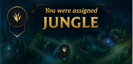

El jungla impacta en literalmente todo el mapa. Se encarga de asegurar objetivos neutrales como Dragones, Heraldo y Barón, además de ayudar a las líneas con ganks. Muchas veces define el ritmo de la partida dependiendo de dónde aparezca y qué líneas priorice.
Jungle Lane
Farming
El farming en jungla consiste en optimizar rutas para mantener experiencia y oro sin perder presencia en el mapa. Un jungla eficiente limpia campamentos con buen timing mientras busca oportunidades de gank o invade según la información disponible. La velocidad de limpieza y el control de recursos determinan mucho el ritmo de la partida.
Control de oleadas
Aunque no tenga línea fija, el jungla influye constantemente en las oleadas. Puede ayudar a pushear después de un gank exitoso, congelar para un aliado o romper freezes enemigos. Entender el estado de las líneas es clave para decidir dónde jugar y qué carriles tienen prioridad para objetivos o invasiones.
Rotaciones y objetivos
El jungla es el principal responsable del control de objetivos neutrales como dragones, Heraldos y Barón. Debe administrar visión, prioridad de líneas y smite para asegurar estos recursos de forma segura. Un buen jungla entiende cuándo pelear un objetivo y cuándo cederlo para evitar pérdidas mayores en el mapa.
Impacto en el mapa
El jungla probablemente sea el rol con mayor impacto temprano en el mapa. Sus decisiones afectan todas las líneas y el ritmo completo de la partida. Un jungla con buena lectura del juego crea ventajas mediante presión constante, control de visión y presencia inteligente, incluso sin necesidad de conseguir muchas kills.